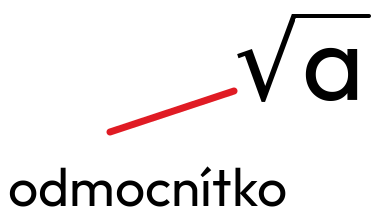

Druhá odmocnina
Základy
čtvercové číslo - přirozené číslo, které je 2 mocninou nějakého přirozeného čísla (1, 4, 9, 81)
b² = a; = b
Druhá odmocnina ze záporného čísla neexistuje.
= X
-3 × (-3) = 9
3 × 3 = 9
Druhé odmocnina je vždy 0 nebo kladná.
= 4 - proč ne -4? nemůžeme si vybrat (ono by to teoreticky šlo, ale matematicky ne)
Pravidlo
= ×
Odmocňování zpaměti
- odstravím koncové 0 - 196
- odmocním - 14
- vrátím polovinu nul - 140
= 140
- odstraním des. čárku - 256
- odmocním - 16
- vrátím polovinu des. míst - 1,6
= 1,6